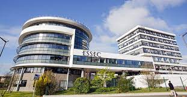
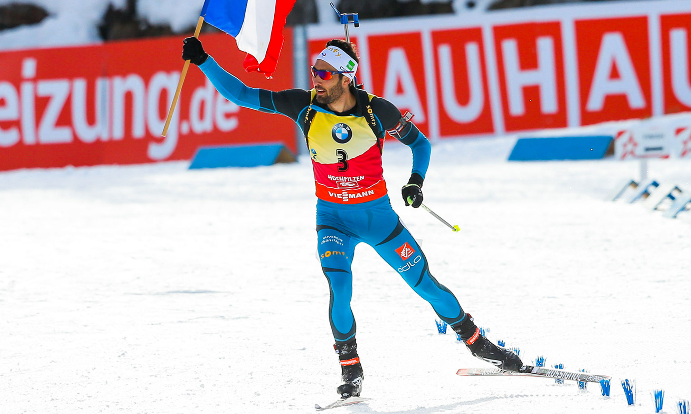
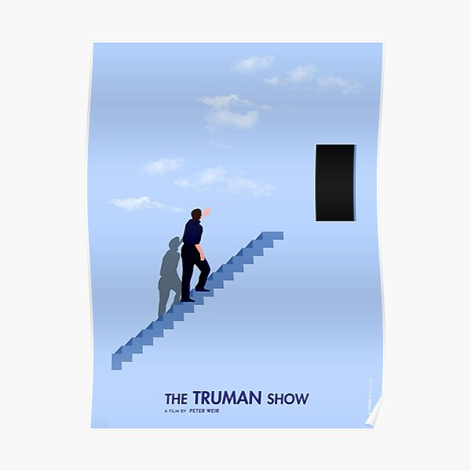
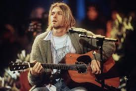

Hi I'm Mathieu !
Welcome to my profile page
Who am I ?
My name is Mathieu Echevin I’m 18 years old. I was born in Paris but grew up in Lyon. During my childhood, I had the opportunity to practice many activities. I started playing tennis from the age of 5 to 10. In the meantime, I started to play an instrument: the oboe. I played this instrument for almost ten years. At the age of 8, I decided that I wanted to play football, so I started this sport and played it for 10 years.

I am currently in my first year of the Global BBA program at ESSEC Business School in Cergy. However, my background did not predestine me for a future in business school. I obtained my baccalaureate in 2021 with a major in mathematics, physics and chemistry. It was after meeting someone at a student fair that I decided to go to a business school. Today I do not regret this choice at all and I am convinced that it is the most adapted to who I am.
Academic Career 🎓
Essec Buisness School (2021-2025); Member of the S1 Dean's list (top 10% students)
Baccalauréat Général 2021; Mention Assez Bien
Specialities: Mathematics; Physics-Chemistry; Biology
Course cetificate: Sports and society (MOOC) from Duke University
My Resume
Languages:
French 🇫🇷: Native language
English 🇬🇧: Toefl 98 points; Cambridge First certificate of english
German 🇩🇪: 8 years
Italian 🇮🇹: 4 years
Other skills:
Good knowledge of the Microsoft Office package
Good knowledge of Canva presentation software
Excel: Harvard Spreadsheet Modeling Online Course
Professional experience:
Company internship - Head France (1 week, 2020)
Volunteer supervision of young people during football courses
Babysitting
My Hobbies
Sports: Football ⚽️; Biathlon; ⛷cross country skiing...
Cinema 🎥
Music 🎶
